Coach guide
Batch உருவாக்குவது முதல் points கணக்கு வரை, படத்தோட.
Coach Console திறங்க →முழு flow - 5 படி
- Programs-ல எந்த நாள் எந்த tracker திறக்கணும்னு ஒரு தடவை tick.
- Batches → New batch.
- ஆட்கள் list paste / Excel → Add to batch.
- WhatsApp / Group message-ல login அனுப்பு.
- ஒவ்வொரு class முடிஞ்சதும் Day N done ✓. Points, streak, leaderboard, badges எல்லாம் தானா நடக்கும்.
- 1Coach Console
- 2புது Batch உருவாக்குங்க
- 3ஆட்களை சேருங்க
- 4Login விவரம் அனுப்புங்க
- 5ஒவ்வொரு class முடிஞ்சதும்
- 6எந்த நாள் எந்த tracker? (ஒரு தடவை)
- 7Batch-ல இருக்கிறவங்க
- 8புது Tracker / Habit
- 9Check-ins - யார் tick பண்ணாங்க
- 10கேள்விகளுக்கு பதில்
- 11Members
- 12Leaderboard & Reports
- 13Settings - points மதிப்பு
Coach Console
Coach login பண்ணினா நேரா இங்க வரும் (member மாதிரியே Google / code / password login).
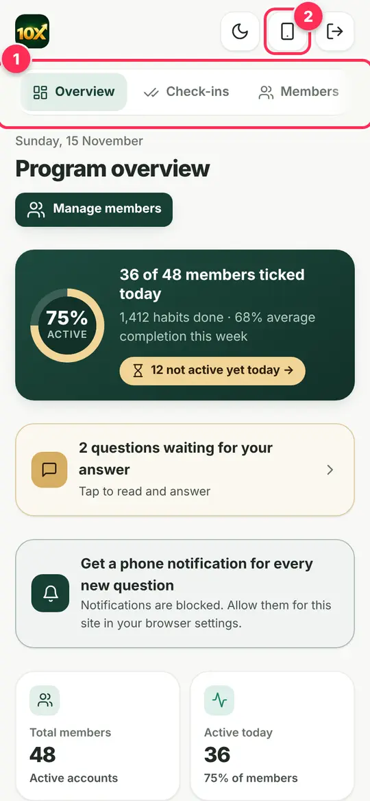
- 1மேல menu - இடது வலது swipe பண்ணா எல்லா பக்கமும்: Overview · Check-ins · Members · Batches · Sessions · Activities · Leaderboard · Reports · Settings.
- 2📱 Member view - members-க்கு app எப்படி தெரியுதுன்னு நீங்களே பார்க்க.
- ★Sessions மேல சிவப்பு எண் = பதில் சொல்ல வேண்டிய கேள்விகள்.
புது Batch உருவாக்குங்க
Batches பக்கம் → New batch. ஒவ்வொரு program தொடக்கத்துக்கும் ஒரு batch.
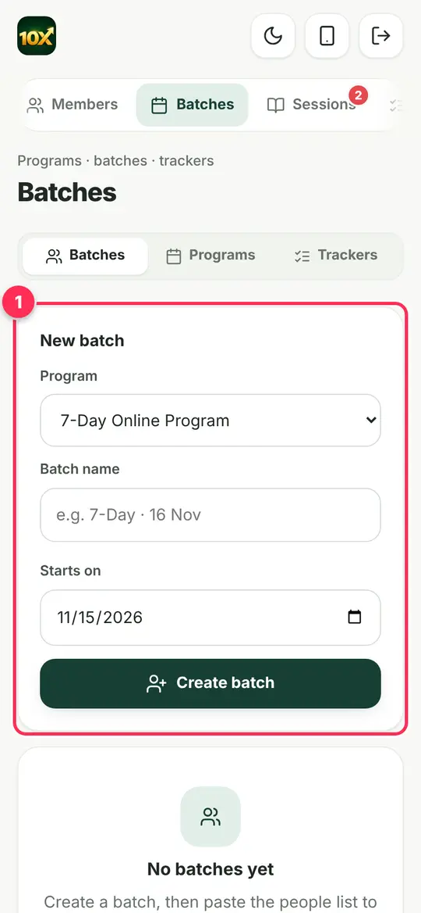
- 1Program தேர்வு (7-Day Online / 60-Day Membership / Workshop), batch பெயர் (உதா: 7-Day · 16 Nov), தொடங்கும் நாள் → Create batch.
ஆட்களை சேருங்க
பெயர், email, phone - எந்த வரிசையிலும், comma அல்லது tab போட்டு. ஒரு வரிக்கு ஒருத்தர்.
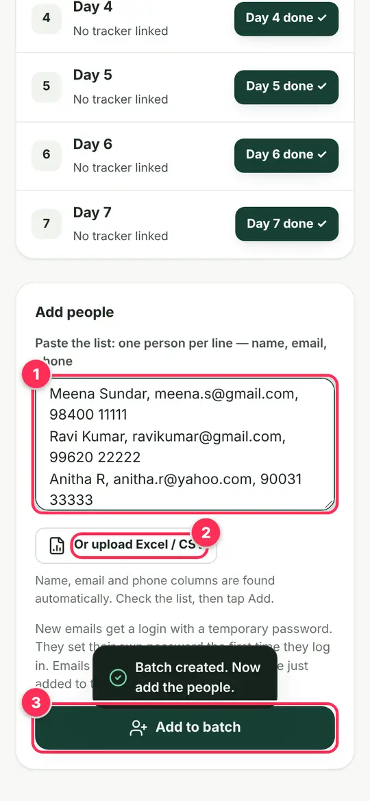
- 1List-ஐ இங்க paste பண்ணுங்க (Google Form / WhatsApp-ல இருந்து copy பண்ணலாம்).
- 2அல்லது Excel / CSV upload - பெயர், email, phone column-களை தானா எடுத்துக்கும்.
- 3Add to batch - ஒவ்வொருத்தருக்கும் account தானா உருவாகும், ஒரு password-உம் வரும்.
Login விவரம் அனுப்புங்க
சேர்த்ததும் இந்த பட்டியல் வரும். Password இப்போ மட்டும் தான் தெரியும் - பக்கத்தை மூடும் முன் அனுப்பிடுங்க.
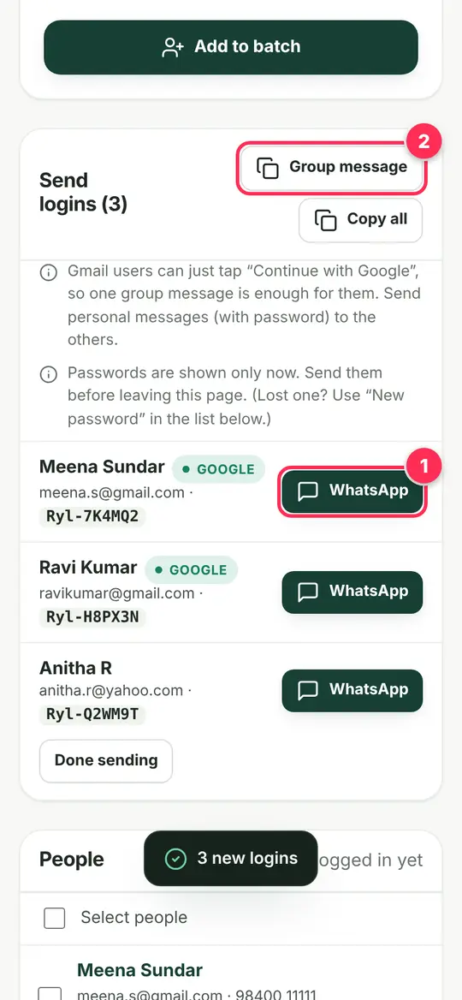
- 1WhatsApp - அந்த நபருக்கு link, email, password எல்லாம் ready message-ஆ திறக்கும். Send மட்டும் தட்டுங்க.
- 2Group message - WhatsApp group-க்கு ஒரே message. Gmail இருக்கிறவங்க "Continue with Google" தட்டினாலே போதும்.
ஒவ்வொரு class முடிஞ்சதும்
Batch-ஐ திறந்தா Day 1, Day 2... பட்டியல் இருக்கும்.
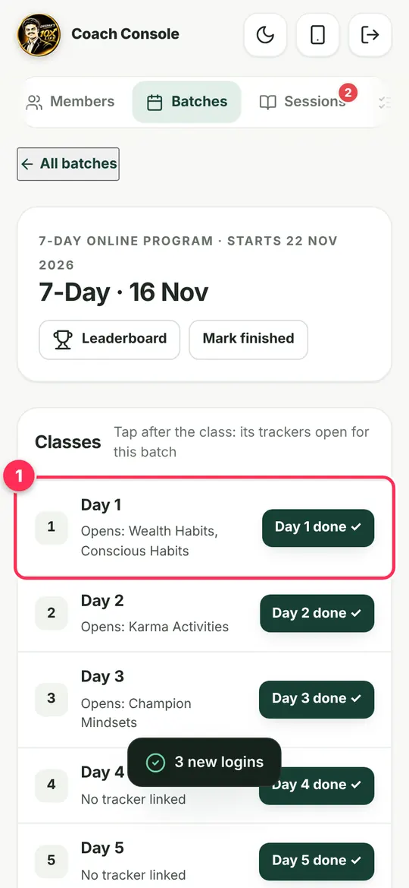
- 1Class முடிஞ்சதும் Day 1 done ✓ தட்டுங்க. அந்த நாளுக்கான tracker அந்த batch-ல எல்லாருக்கும் திறக்கும், notification-உம் போகும்.
- ★Leaderboard - இந்த batch-ஓட ranking. Mark finished - program முடிஞ்சதும்.
எந்த நாள் எந்த tracker? (ஒரு தடவை)
Batches → Programs tab. Program-ஐ தேர்வு செய்து ஒவ்வொரு நாளுக்கும் tracker-ஐ tick பண்ணுங்க. ஒரு தடவை செட் பண்ணா எல்லா batch-க்கும் அதே.
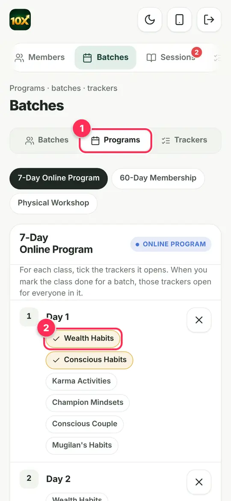
- 1Programs tab.
- 2Day-க்கு கீழ tracker பெயரை தட்டினா அது ✓ குறியோட தேர்வாகும். மறுபடி தட்டினா எடுத்துடும்.
Batch-ல இருக்கிறவங்க
Batch பக்கத்துல கீழ இறங்கினா People.
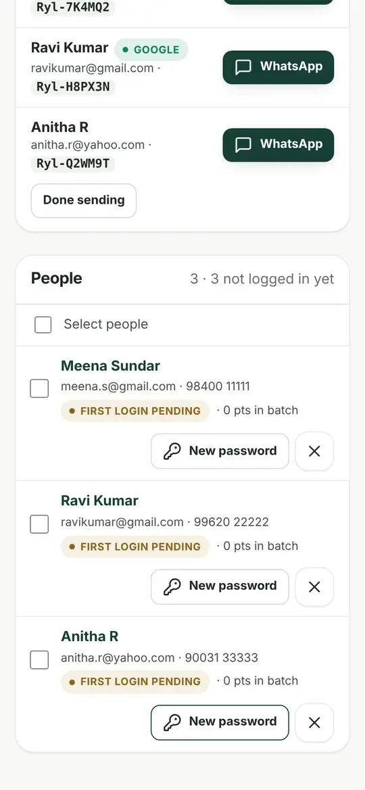
- ★First login pending - இன்னும் login பண்ணல. அவங்களுக்கு மறுபடி WhatsApp பண்ணுங்க.
- ★New password - password மறந்தவங்களுக்கு புது password.
- ★Checkbox-ல ஆட்களை தேர்வு செய்து வேறு batch-க்கு சேர்க்கலாம் (உதா: 7-Day முடிச்சவங்கள்ல fees கட்டினவங்களை 60-Day Membership-க்கு).
புது Tracker / Habit
Batches → Trackers tab. புது tracker sheet உருவாக்கி அதுக்கு habits சேர்க்கலாம். உருவாக்கியதும் Programs-ல எந்த நாள் திறக்கணும்னு tick பண்ணுங்க.
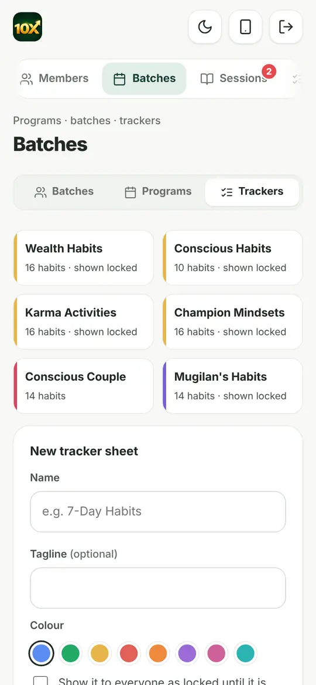
Check-ins - யார் tick பண்ணாங்க
நாள் வாரியா ஒவ்வொருத்தரும் எத்தனை Done, Not done. ஒருத்தர் பெயரை தட்டினா அவங்க habit வாரியா பார்க்கலாம்.
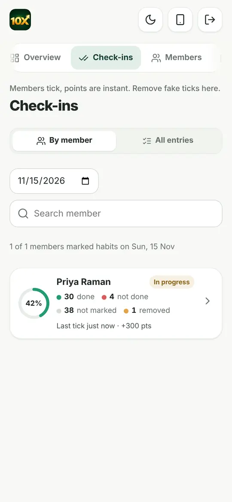
- ★செய்யாம tick பண்ணது தெரிஞ்சா அந்த tick-ஐ Remove பண்ணலாம் - காரணம் கேட்கும், அவங்களுக்கு notification போகும், points போயிடும்.
கேள்விகளுக்கு பதில்
Sessions → Questions. பதில் போட்டு Send answer - member-க்கு உடனே notification போகும்.
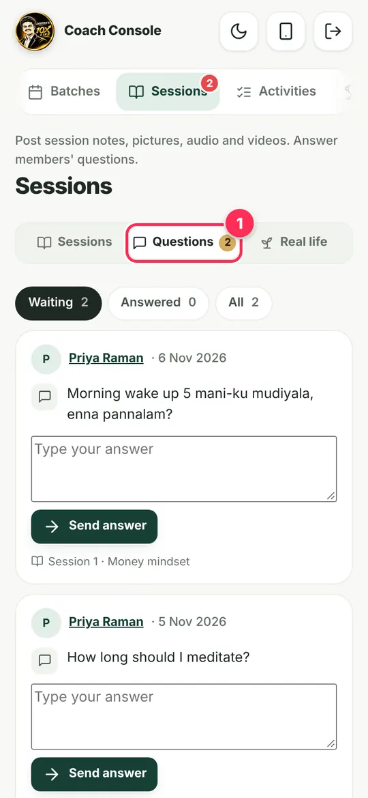
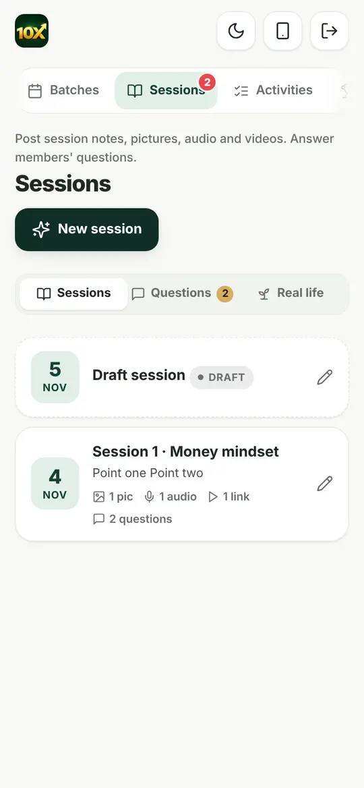
- 1பதில் காத்திருக்கும் கேள்விகள் எண்ணிக்கை.
- ★Sessions tab-ல ஒவ்வொரு class-ஓட notes, படம், audio, video link போடலாம். Real life tab-ல members அனுபவங்கள்.
Members
எல்லா members பட்டியல். ஒருத்தருக்கோ எல்லாருக்குமோ notification அனுப்பலாம். Tracker access-ஐ தனியா கொடுக்கலாம் / எடுக்கலாம்.
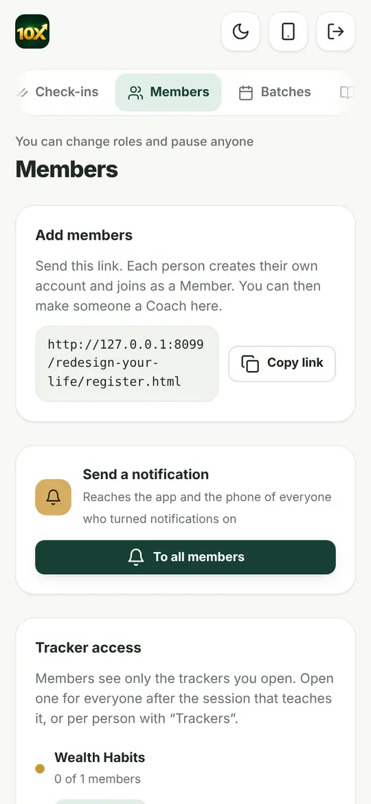
Leaderboard & Reports
Leaderboard-ல batch தேர்வு செய்யலாம். Reports-ல தேதி வாரியா points, consistency - Download CSV (Excel-ல திறக்கும்).
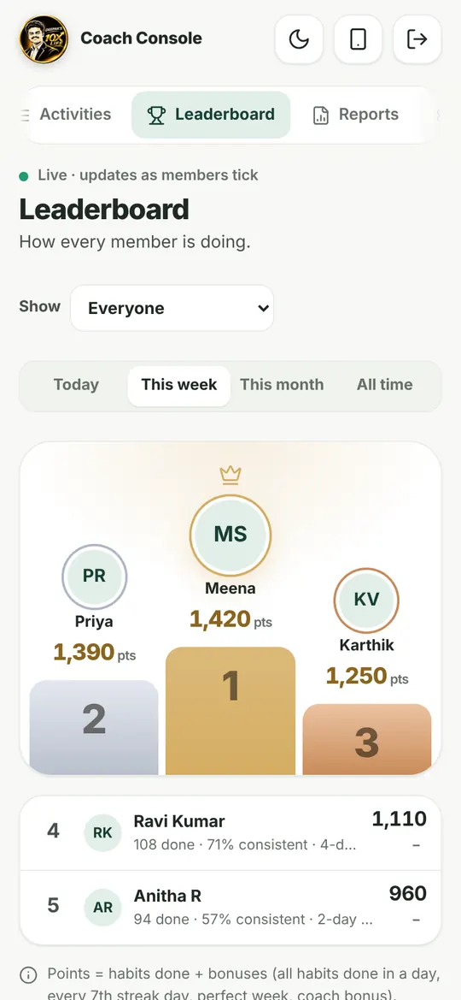
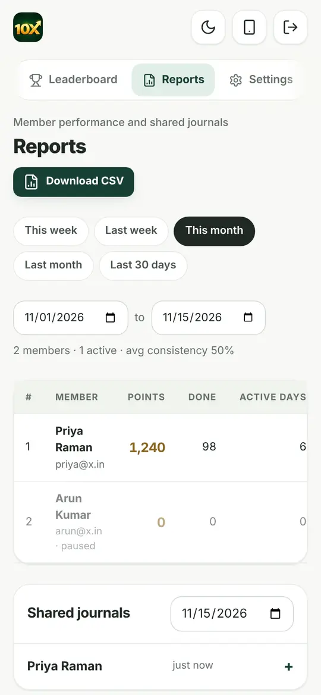
Settings - points மதிப்பு
Bonus points-ஐ இங்க மாற்றலாம். மாற்றினா இனிமே வர்ற tick-களுக்கு மட்டும்.
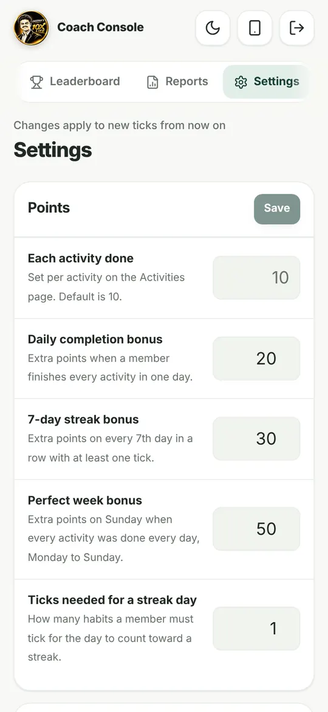
Points எப்படி கணக்கு போடுறோம்
எல்லா கணக்கும் server-ல (database) நடக்கும் - phone-ல யாரும் மாற்ற முடியாது. Points ஒருபோதும் மைனஸ் ஆகாது.
| எப்போ | Points |
|---|---|
| ஒரு habit ✓ Done (Activities-ல habit வாரியா மாற்றலாம்) | +10 |
| ஒரு habit ✗ Not done | 0 |
| Daily bonus - அன்னைக்கு அவருக்கு திறந்த எல்லா habits-உம் Done | +20 |
| Streak bonus - தொடர்ச்சியின் ஒவ்வொரு 7வது நாளும் (7, 14, 21...) | +30 |
| Perfect week - திங்கள் முதல் ஞாயிறு வரை எல்லா habits, எல்லா நாளும் (ஞாயிறு அன்று) | +50 |
| Coach bonus - Members-ல ஒருத்தருக்கு, காரணத்தோட (1 முதல் 500) | +1…500 |
| Coach ஒரு tick-ஐ Remove பண்ணா | அந்த points போகும் |
- ★Streak: அன்னைக்கு குறைஞ்சது 1 habit Done பண்ணா அந்த நாள் streak-ல சேரும் (Settings-ல "Ticks needed for a streak day" மாற்றலாம்). ஒரு நாள் விட்டா மறுபடி 1-ல இருந்து.
- ★இன்றைய நாள் மட்டும்: members இன்றைய habits-ஐ மட்டும் tick பண்ண முடியும். நாள் இந்திய நேரம் இரவு 12 மணிக்கு மாறும்.
- ★Leaderboard: மொத்த points. ஒரே points-ஆ இருந்தா - consistency அதிகம் → நீண்ட streak → முதல்ல அந்த score-ஐ தொட்டவர்.
- ★Consistency %: அந்த காலத்துல எத்தனை நாள் tick பண்ணாங்க ÷ மொத்த நாள்.
Badges எப்போ கிடைக்கும்
| Badge | எப்போ |
|---|---|
| First Activity | முதல் habit tick |
| 7-Day Streak · 30-Day Consistency · 60-Day Transformation · 90-Day Champion | 7 / 30 / 60 / 90 நாள் தொடர்ந்து (ஒரு நாளைக்கு குறைஞ்சது 1 habit) |
| Wealth Master · Karma Star · Champion Mindset | அந்த tracker-ஓட எல்லா habits-உம் 7 வெவ்வேறு நாள் முழுசா |
| Perfect Week | ஒரு வாரம் எல்லா habits எல்லா நாளும் |
| Monthly Champion | மாதம் முடிஞ்சதும் Settings → "Award last month's champion" தட்டினா #1-க்கு |
• Streak badges (7/30/60/90) - மாறாது. ஒரு நாளைக்கு 1 habit போதும், tracker எத்தனை இருந்தாலும் அதே.
• Daily bonus (+20), Perfect Week - கொஞ்சம் கடினமாகும், ஏன்னா "எல்லா habits" = அந்த நபருக்கு திறந்த எல்லா habits. Batch-ல நாள் நாளா tracker திறக்கும்போது அது தானா கணக்கில வரும்.
• Master badges இப்போ Wealth, Karma, Champion-க்கு மட்டும். புது tracker-க்கு வேணும்னா சேர்க்கலாம்.
• ஏற்கனவே கிடைச்ச badges, points ஒருபோதும் போகாது.
சிவப்பு எண் ① ② ③ = படத்தில் தட்ட வேண்டிய இடம்.
படங்கள் மாதிரி கணக்கு (demo) வைத்து எடுத்தவை; உங்க app-ல உங்க பெயர், உங்க points வரும்.
Privacy